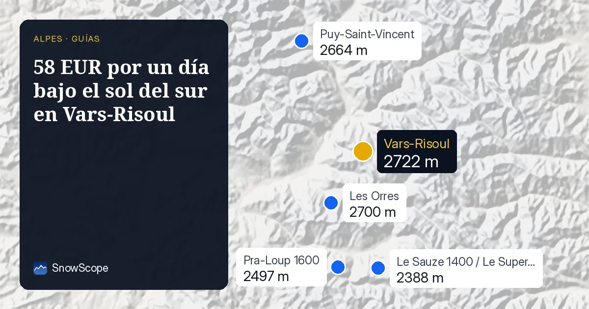

58 EUR por un día bajo el sol del sur en Vars-Risoul
Puedes esquiar en el área de la Forêt Blanche por 58 EUR al día o 298 EUR por un pase de seis días este invierno. Esta estación del sur de Francia ofrece 131 km de pistas señalizadas con un desnivel de 1090 m. Antes de reservar, necesitas saber si la nieve de principios de temporada vale tu dinero.
Consulta la previsión de nieve en tiempo real de Vars-Risoul en la app SnowScopeEspesor de nieve, alertas de nieve polvo y mapa 3D, gratis.
El coste de un viaje a la Forêt Blanche
Si eres como yo y miras cada euro, el precio del forfait es lo primero en lo que te fijas. Para el invierno 2026-27, un pase de adulto de 1 día para el área de Vars-Risoul cuesta 58 EUR. Si quieres quedarte más tiempo, el pase de adulto de 6 días para la Forêt Blanche cuesta 298 EUR. Esto te da acceso a una zona de esquí señalizada con 38 remontes y 131 km de pistas.
La estación se sitúa entre 1632 m y 2722 m. Esta altura es importante porque la nieve de principios de temporada puede ser una apuesta. Estás pagando por una zona grande, así que quieres asegurarte de que las pistas estén realmente abiertas. En nuestro historial de nieve de 46 inviernos pasados, el espesor habitual en diciembre al pie de los remontes es de 33 cm, que no es mucho para el inicio de la temporada.

¿Es suficiente la nieve de diciembre?
Mirando nuestro historial de nieve desde 1980-81 hasta 2025-26, el espesor de la nieve varía mucho. A media montaña, que está a 2177 m, el espesor habitual en diciembre es de 51 cm. Sin embargo, en un diciembre escaso, que ocurre aproximadamente 1 invierno de cada 10, ese espesor puede caer a solo 20 cm. En la parte superior de los remontes a 2722 m, las cosas se ven mejor con un espesor habitual de 77 cm.
La base a 1632 m es el punto más débil. En un diciembre escaso, el espesor allí puede ser tan bajo como 9 cm. Si tienes suerte y tienes un diciembre con mucha nieve, lo cual también sucede 1 invierno de cada 10, podrías ver 61 cm en la base y 160 cm en la cima. El invierno pasado, en diciembre 2025-26, el promedio fue de 25 cm en la base y 57 cm en la cima, lo que estuvo un poco por debajo de los números habituales.
Oportunidades a principios o finales de diciembre
El momento de tu viaje en diciembre cambia tus posibilidades de encontrar buena nieve. En la primera semana del mes, del 1 al 7 de diciembre, solo hay un 30 % de inviernos con 30 cm o más en la base. Para la última semana, del 22 al 28 de diciembre, esta proporción de inviernos sube al 74 %. Si quieres ver 50 cm o más en la base, eso solo ocurre en el 30 % de los inviernos pasados incluso en esa última semana.
La media montaña es una apuesta más segura para tu dinero. Del 15 al 21 de diciembre, hay un 85 % de inviernos con al menos 30 cm de nieve a 2177 m. La parte superior de los remontes es la más fiable, con un 91 % de inviernos teniendo 30 cm o más desde el 8 al 14 de diciembre. Para finales de mes, la cima tiene 50 cm o más en el 93 % de los inviernos pasados.
Comparación con Serre Chevalier
Vale la pena mirar al vecino más grande, Serre Chevalier. Esa estación tiene un área de esquí señalizada más grande con 157 km de pistas y 70 remontes. Para un viaje desde la apertura hasta el 18 de diciembre de 2026, un pase de adulto de 6 días allí cuesta 276,00 EUR. Esto es más barato que el pase de 298 EUR en Vars-Risoul para esas fechas específicas. Sin embargo, del 19 de diciembre de 2026 al 1 de enero de 2027, el precio del pase de 6 días en Serre Chevalier sube a 345,00 EUR.
Serre Chevalier también tiene más nieve en la cima. Su remonte más alto está a 2765 m, donde el espesor habitual en diciembre es de 111 cm. En nuestro historial de nieve, Serre Chevalier tiene 30 cm o más en su cima en el 100 % de los inviernos pasados a partir del 8 de diciembre. En la base, que es más baja a 1219 m, el espesor habitual es de 30 cm, que es similar a los 33 cm en la base de Vars-Risoul.
Tendencias recientes y perspectivas
Nuestro historial de nieve muestra que la nieve de diciembre a media montaña ha mejorado con el tiempo. En la mitad de los primeros 15 inviernos (1980-81 al 1994-95), el promedio de diciembre era de 42 cm. En la mitad de los últimos 15 inviernos (2011-12 al 2025-26), ese promedio subió a 62 cm. Estas son buenas noticias para los esquiadores preocupados por el sol del sur.
A fecha de 13 de noviembre de 2026, la nieve es bastante escasa, con 0 cm en la base y 10 cm en la cima. Sin embargo, la previsión de dos semanas para media montaña y superior muestra un rango de 62 a 86 cm de nieve nueva. Esto podría proporcionar un gran comienzo de temporada si la previsión se cumple. El primer día habitual de nieve duradera en la cima es el 19 de octubre, por lo que la montaña ya va por detrás de esa fecha.
Consejos para esquiadores
- Reserva tu viaje para la semana del 22 al 28 de diciembre si quieres un 74 % de probabilidad de tener 30 cm de nieve en la base.
- Quédate en las pistas por encima de la media montaña a 2177 m donde el espesor habitual es de 51 cm en lugar de 33 cm en la parte baja.
- Compara el pase de 298 EUR con el precio de principios de temporada de 276,00 EUR en Serre Chevalier si viajas antes del 18 de diciembre.
- Consulta el boletín de aludes antes de ir fuera de pista, especialmente si llegan los 62 a 86 cm de nieve nueva previstos.
- Compra tu pase de la Forêt Blanche en el sitio oficial para asegurarte de obtener el precio verificado de 58 EUR por un día.
Más mapas (sitios externos)
Referencias y créditos
- Risoul, official ski pass page, Forêt Blanche 2026-27 risoul.labellemontagne.com/fr/hiver/forfaits/risoul-foret-blanche/
- Risoul, official 6-day Forêt Blanche pass page 2026-27 risoul.labellemontagne.com/fr/hiver/forfaits/6-jours-foret-blanche/
- Serre Chevalier, official booking site, ski passes 2026-27 reservation.serre-chevalier.com/achetez-vos-ski-pass-serre-chevalier-et-autres-prestations.html
- SnowScope, December snow at three heights and today's snow map snowscope.app/
Sobre estas cifras
Cifras de nieve: histórico de nieve de SnowScope, 46 inviernos pasados (1980-81 a 2025-26) a tres alturas de cada estación (un modelo del pasado corregido por altitud: una estimación para una zona, no mediciones de la estación); cifras de diciembre calculadas con los espesores diarios de esos inviernos. Nieve actual y tendencia a dos semanas: previsiones de SnowScope (tendencia de ECMWF y GFS, un rango, no una promesa). Remontes y pistas: cartografía de OpenSkiMap. Precios: las páginas oficiales de abajo, consultadas el 2026-11-13; los precios pueden cambiar, compruébalos antes de reservar.
Boletines oficiales de aludes: Météo-France – Bulletin d'estimation du risque d'avalanche
Citar este informe
Para investigación, docencia o prensa: cifras y gráficos reutilizables libremente bajo CC BY 4.0 con esta cita.
SnowScope (2026), 58 EUR por un día bajo el sol del sur en Vars-Risoul, https://snowscope.app/blog/es/2026/11/vars-risoul-foret-blanche-december-ski-price-snow-2026.html, consultado el 2026-11-14
SnowScope (Atlas Labs). (2026, November 14). 58 EUR por un día bajo el sol del sur en Vars-Risoul. SnowScope snow reports. https://snowscope.app/blog/es/2026/11/vars-risoul-foret-blanche-december-ski-price-snow-2026.html
BibTeX
@misc{snowscope2026varsrisoulforetblanchede,
author = {{SnowScope (Atlas Labs)}},
title = {58 EUR por un día bajo el sol del sur en Vars-Risoul},
year = {2026},
month = nov,
howpublished = {\url{https://snowscope.app/blog/es/2026/11/vars-risoul-foret-blanche-december-ski-price-snow-2026.html}},
note = {Published 2026-11-14 17:01 UTC; accessed 2026-11-14}
}· CC BY 4.0 · Métodos, datos y herramientas →
Vars-Risoul: nieve y temperatura según la altura, este invierno vs el pasado (herramientas) →
Sigue Vars-Risoul
Gratis: un aviso cuando llega la nieve y la previsión cada mañana.